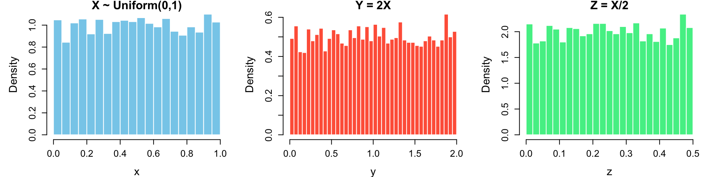

Suppose \(X \sim \text{Uniform}(0,1)\) and \(Y = 2X, Z = X/2.\)
set.seed(1234)
x <- runif(5000, 0, 1)
y <- 2 * x
z <- x / 2
par(mfrow = c(1, 3), mar = c(4,5,1,1))
hist(x, prob = TRUE, breaks = 30,
main = "X ~ Uniform(0,1)", xlab = "x",
col = "skyblue", border = "white",
cex.lab = 1.4, cex.main = 1.5, cex.axis = 1.2)
hist(y, prob = TRUE, breaks = 30,
main = "Y = 2X", xlab = "y",
col = "tomato", border = "white",
cex.lab = 1.4, cex.main = 1.5, cex.axis = 1.2)
hist(z, prob = TRUE, breaks = 30,
main = "Z = X/2", xlab = "z",
col = "seagreen2", border = "white",
cex.lab = 1.4, cex.main = 1.5, cex.axis = 1.2)